¿Por qué repito relaciones tóxicas?
Retiro para mujeres · Mount Shasta, California
Vientre Divino
Del jueves 20 al domingo 23 de agosto de 2026
Un viaje profundo de sanación femenina, conexión ancestral y transformación interior para mujeres listas para dejar de vivir desde la lucha y comenzar a habitar su poder desde la intuición, el amor y la magia. Una experiencia íntima de Mundo Holístico USA en la energía sagrada de Mount Shasta.
De Amazona a Maga: vuelve a tu vientre, a tu voz interna y a tu energía creadora.Retiro íntimo para mujeres mayores de 21 años · Cupos limitados · Dirección privada al confirmar inscripción
Mount ShastaMontaña, aire puro, flores de verano y espacios naturales.
Proceso íntimoRetiro femenino con cupos limitados y acompañamiento cercano.
Preparación previaReunión por Zoom de 4 horas: primera clase de Amazona a Maga e intención de sanación.
Tu cuerpo, tu historia y tu linaje te están hablando
Quizá has cargado demasiado tiempo con más de lo que es tuyo
Quizá has sentido que repites relaciones que duelen. Quizá cargas cansancio, culpa, síntomas, bloqueos o memorias que no sabes de dónde vienen. Quizá has tenido que ser fuerte durante tanto tiempo que olvidaste cómo se siente ser sostenida.
Vientre Divino nace para mujeres que desean dejar de sobrevivir como amazonas heridas y comenzar a recordar su sabiduría como magas.
Este retiro puede ser para ti
¿Te reconoces en esto?
Si eres una mujer mayor de 21 años y estas preguntas resuenan en ti, este retiro puede abrir un camino profundo para sanar, comprender y transformarte.
¿Por qué me cuesta llevarme bien con mis hijos?
¿Por qué heredé situaciones negativas de mis ancestros?
¿Por qué no puedo hacer dinero?
¿Por qué no me llevo bien con las mujeres?
¿Por qué no puedo disfrutar mi sexualidad?
¿Por qué tengo síntomas que no sanan?
¿Por qué he desarrollado enfermedades tan joven?
¿Por qué no puedo bajar de peso?
¿Por qué me duele mi periodo menstrual?
Cuando lo femenino y lo masculino dentro de ti pierden armonía, tu vida comienza a mostrarlo en el amor, la salud, el dinero, las relaciones y la forma en que habitas tu cuerpo.
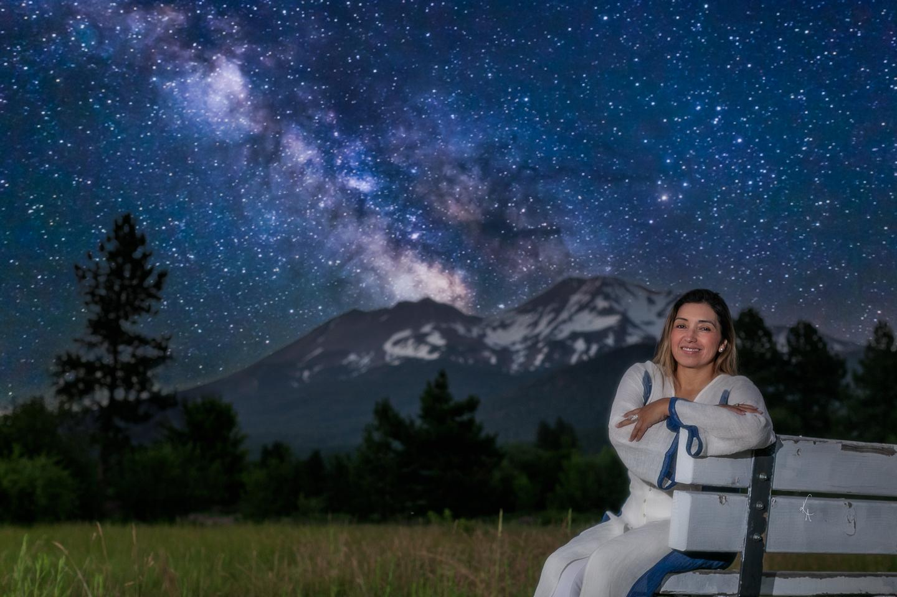
Lo femenino como medicina
Volver a lo femenino no es debilidad. Es sabiduría.
Lo femenino es suavidad, intuición, pausa, creatividad, nutrición, escucha interna, amor, paciencia, sensibilidad y conexión con los ciclos.
Pero muchas mujeres aprendieron a sobrevivir desde la exigencia, el control, la dureza, el sacrificio y la desconexión del cuerpo.
Vientre Divino no es solo un retiro. Es una experiencia de reconexión femenina en Mount Shasta para mujeres que sienten que han cargado demasiado tiempo con relaciones tóxicas, patrones heredados, cansancio emocional, desconexión con su cuerpo, heridas del linaje femenino o una vida vivida desde la supervivencia.
Isabela Tena te guía a reconocer esas memorias, comprenderlas y transformarlas desde un espacio seguro, íntimo y profundamente femenino.
La transformación central del retiro
De Amazona a Maga
La travesía más poderosa que puedes vivir como mujer es la de volver a ti misma, sin negar la fuerza que te sostuvo, pero sin seguir viviendo desde la armadura.
La Amazona
La mujer que ha sobrevivido- No se permite descansar, siente que debe poder sola con todo.
- Ha bloqueado su vulnerabilidad para sobrevivir.
- Atrae relaciones donde termina ayudando, salvando o cargando.
- Siente que su fortaleza se convirtió en armadura.
- Sabe liderar, pero le cuesta recibir.
La Maga
La mujer que recuerda- Vuelve a su intuición y a su sabiduría ancestral.
- Habita su suavidad sin sentirla como debilidad.
- Reconoce su merecimiento y se permite recibir.
- Sana desde el amor, no desde el sacrificio.
- Se conecta con su poder creador y con su cuerpo.
La transformación no consiste en rechazar a la Amazona interna. Consiste en honrar lo que hizo para protegerte, bajar la armadura y permitir que nazca la Maga.
Mount Shasta, agosto 2026
Una experiencia de sanación femenina en la energía sagrada de Mount Shasta
No vienes solo a escuchar teoría. Vienes a sentir, liberar, comprender e integrar a través de prácticas profundas y espacios de contención.
Círculo de Fuego
Apertura de palabra, cantos, intención y contención del grupo.
Mount Shasta
Conexión con la montaña, la naturaleza, puntos energéticos y belleza de verano.
Temazcal
Purificación, introspección y renacimiento simbólico en un espacio dirigido por mujeres.
Sanación del Útero
Trabajo interno para liberar memorias, emociones y cargas ancestrales.
Terapia de Sonido
Meditaciones guiadas y alquimia sonora dirigida por Isabela Tena.
Kit de Sanación
Herramientas valoradas en $375 USD para continuar tu proceso en casa.
Enfoque en Mount Shasta
Mount Shasta no solo se visita, se habita
Mount Shasta no es únicamente el lugar donde ocurre el retiro: es parte viva del proceso. Su montaña, su silencio, su aire puro y su naturaleza expansiva crean un espacio de pausa, introspección y reconexión profunda.
Aquí, cada experiencia está pensada para que la mujer pueda bajar la armadura, escuchar su cuerpo, reconocer las memorias que ha cargado y abrirse a una nueva forma de habitar su energía femenina.
Mount Shasta sostiene el camino de De Amazona a Maga: un tránsito de la lucha a la intuición, del cansancio a la presencia, del control a la confianza y de la desconexión al regreso amoroso hacia sí misma.
Vientre Divino es una invitación a volver al cuerpo, al vientre, al linaje y a la sabiduría interna, acompañada por la fuerza sagrada de la montaña.

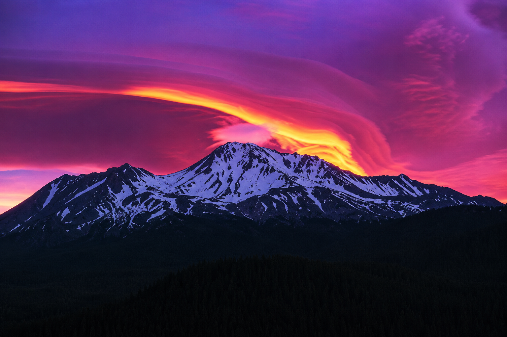
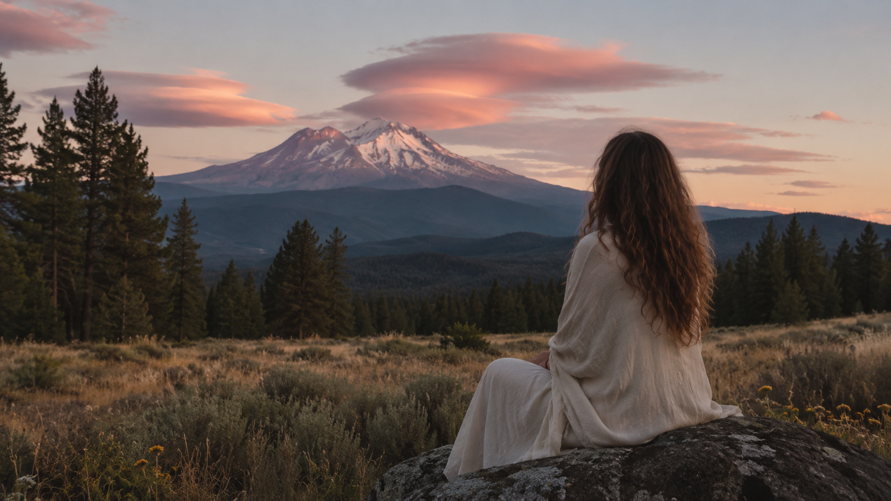
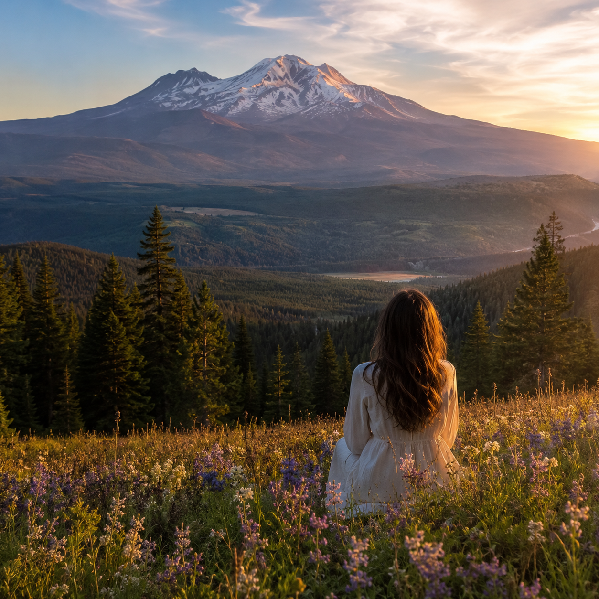
Retiros reales con Isabela
Evidencia visual de experiencias vividas
Estas fotografías muestran momentos reales de procesos ya vividos con Isabela. No son ideas abstractas: son prueba de que este trabajo ha acompañado a mujeres antes, con presencia, experiencia y resultados que se sienten.
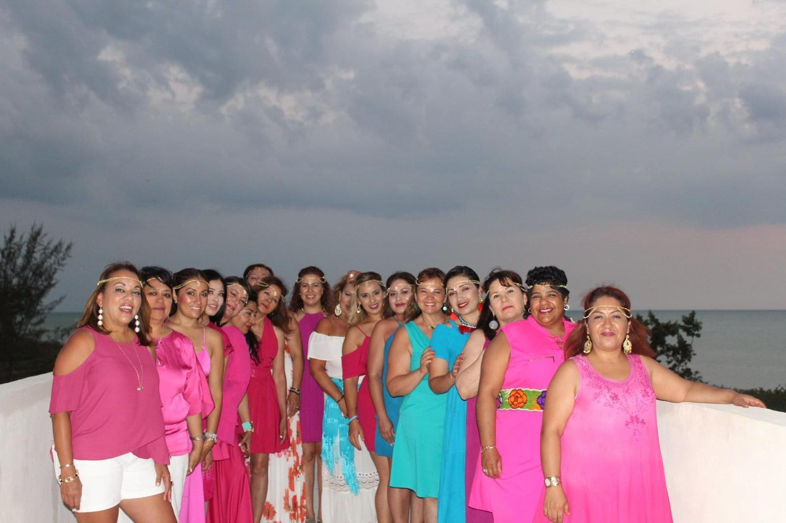
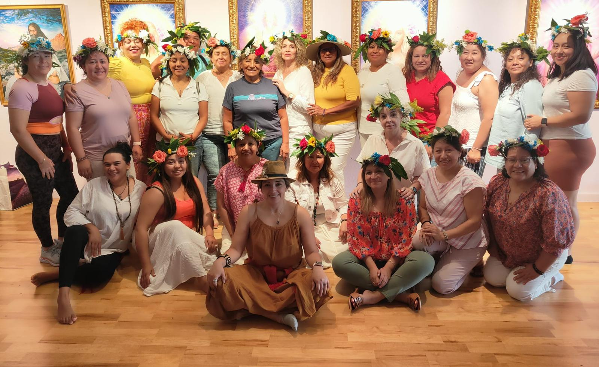
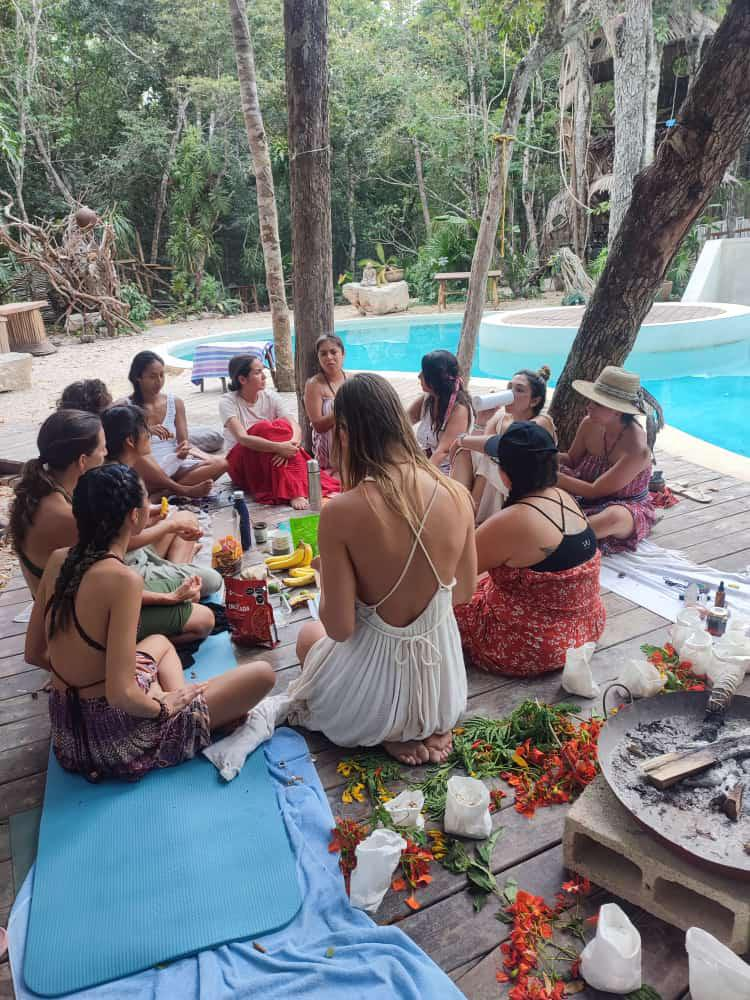
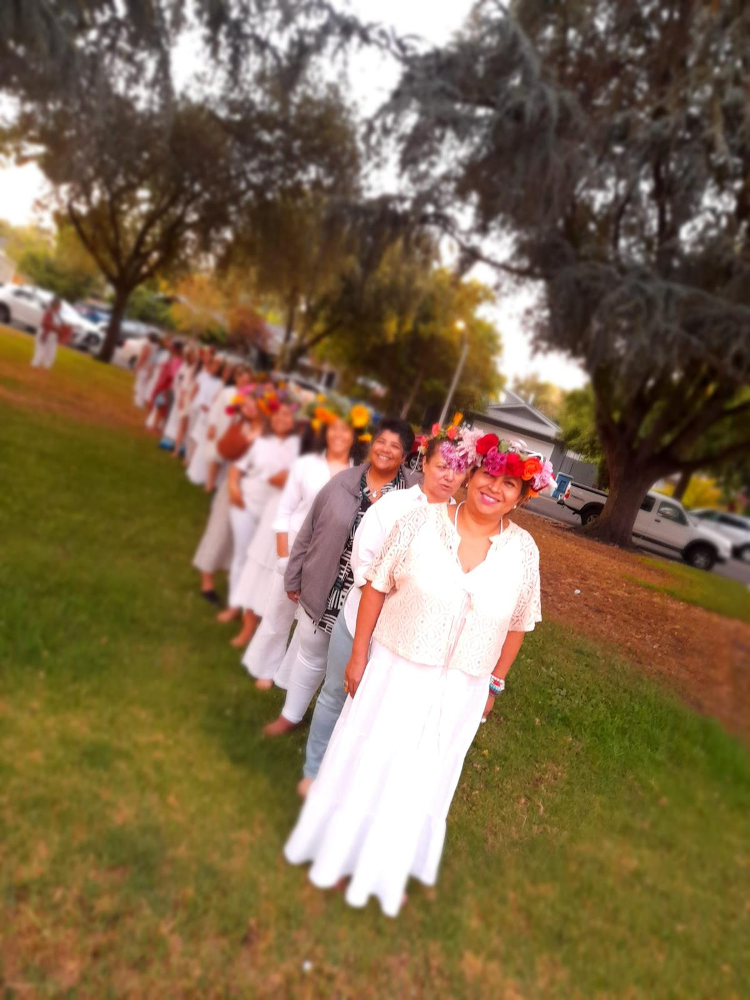
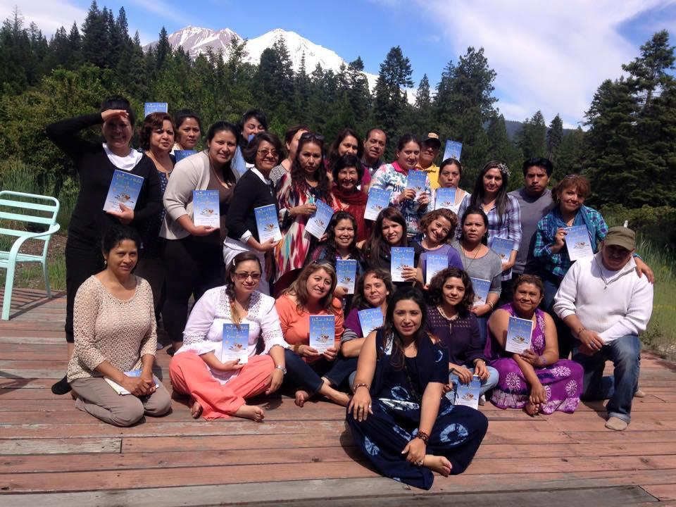
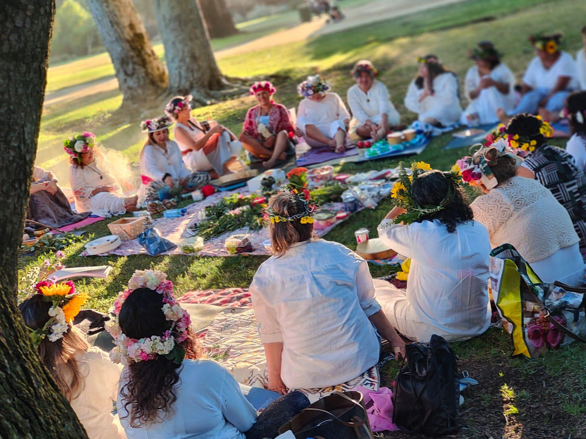
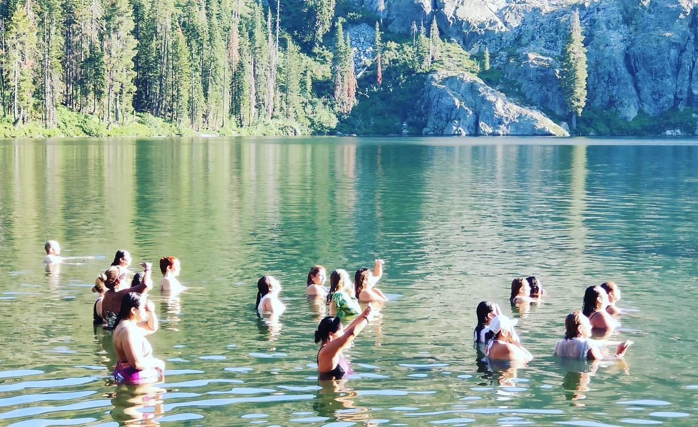
Ubicación sagrada
Mount Shasta: naturaleza, silencio y energía para volver a ti
Mount Shasta será el escenario de este retiro: montaña, bosque, flores de verano, praderas y espacios naturales que invitan a la introspección. Durante la experiencia se visitarán lugares especiales de la zona, incluyendo espacios naturales como la Pradera de la Pantera y jardines meditativos.
Aire de montañaFlores silvestresPradera de la PanteraPuntos energéticosTemazcal
📍 Ubicación: Mount Shasta, California. Cuidamos este encuentro como un espacio íntimo y protegido, por eso los detalles precisos del lugar se comparten de forma personal con cada mujer al confirmar su participación.
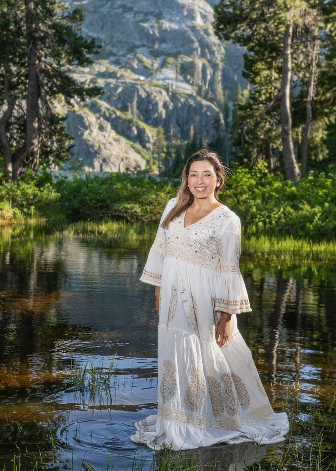
Tu guía en esta travesía
Isabela Tena
Isabela Tena es hipnoterapeuta profesional, fundadora de Mundo Holístico USA y guía de procesos femeninos desde 2014. Ha acompañado a cientos de mujeres en sanación emocional, fertilidad consciente, relaciones, salud integral, trabajo ancestral y expansión de conciencia.
Su camino integra experiencia personal y formación profunda con linajes de mujeres medicina. Su propuesta De Amazona a Maga nace de una vivencia real: dejar la armadura de la supervivencia y volver a la intuición, el amor, la responsabilidad espiritual y la alquimia femenina.
En este retiro, Isabela no enseña desde teoría vacía: guía desde coherencia, práctica y testimonios reales de años de trabajo terapéutico y espiritual con mujeres de distintas culturas.
Jueves 20 · Viernes 21 · Sábado 22 · Domingo 23
Itinerario del retiro
Una ruta de llegada, apertura, trabajo interno, naturaleza, temazcal, liberación ancestral, integración y cierre.
Jueves 20 de agosto
Llegada y apertura3:00 pm
Entrada al campamento y bienvenidaAcomodación, armado de tiendas de campaña y entrega del kit de bienvenida.
5:00 pm
Apertura del círculoFuego, palabra, cantos e intención de grupo.
6:30 pm
CenaPreparada para el grupo.
8:00 pm
Trabajo interno en círculoPrimer encuentro profundo con el proceso de sanación.
10:00 pm
Cierre y descanso
Viernes 21 de agosto
Naturaleza, intención y temazcal8:30 am
Desayuno
9:30 am
Día de campo en la montañaMeditación, intención de sanación y visita a puntos energéticos y espacios naturales.
12:30 pm
Almuerzo por cuenta propiaRestaurantes locales y tiempo para compras en el pueblo.
4:00 pm
TemazcalPurificación, introspección y renacimiento simbólico.
6:00 pm
Cena en el campamento
7:30 pm
Círculo de fuego + terapia de sonidoDirigida por Isabela Tena, introspección y explicación de la sanación del útero.
10:30 pm
Descanso
Sábado 22 de agosto
De Amazona a Maga8:30 am
Desayuno
10:00 am
Clase De Amazona a MagaTerapias, arte terapia, meditación y conexión con los elementos.
12:30 pm
Almuerzo
3:00 pm
Liberación ancestralTrabajo profundo con memorias y patrones del linaje femenino.
6:30 pm
Cena
8:00 pm
Salida grupal hacia la montañaTerapia de sonido y meditación con alquimia.
10:30 pm
Regreso al campamento y descanso
Domingo 23 de agosto
Integración y cierre8:30 am
Desayuno
10:00 am
Clase De Amazona a Maga · continuaciónMeditación, ejercicios de introspección y arte terapia.
12:30 pm
Almuerzo
2:00 pm
Trabajo interno, terapia de sonido y cierreExplicación del uso del kit en casa.
5:00 pm
Cierre del retiro
6:00 pm
Cena
Nota sobre el checkout: se recomienda salir el lunes por la mañana. Después de un proceso profundo, es ideal reposar, integrar y darte un día más de calma.
Inversión
Reserva tu lugar en Vientre Divino
Retiro íntimo para mujeres mayores de 21 años, con cupos limitados y acompañamiento cercano durante toda la experiencia.
$1,500
Un solo pago: $1,500 USD
3 pagos: $1,650 USD
Formas de pago: Zelle o tarjeta de crédito.
- Todas las actividades mencionadas en el itinerario.
- Campamento cómodo con duchas y agua caliente (no incluye equipo de camping).
- Hemos reservado todo el campamento en privado solo para 15 mujeres, en un entorno seguro y sin más huéspedes.
- Reunión de Zoom de aproximadamente 4 horas: nuestra primera clase de Amazona a Maga para definir tu intención de sanar antes de llegar.
- Comidas mencionadas como incluidas y coffee break.
- Kit de sanación de útero valorado en $375 USD.
- Foto y lectura del aura valorada en $275 USD.
- Materiales de trabajo, asistentes, impuestos y chef para grupo.
Dudas frecuentes
Antes de reservar
Información importante para que llegues preparada, segura y con claridad.
Sí. No tener útero o menstruación no significa que hayas dejado de ser mujer ni que no existan emociones, memorias o procesos internos por trabajar.
Sí. El temazcal será dirigido por mujeres.
Sí, siempre que sea mayor de 21 años y esté dispuesta a vivir el proceso de forma personal y consciente.
Sí, siempre que informes previamente tu condición, los medicamentos que tomas y cuentes con seguro médico vigente o seguro de viaje con cobertura médica.
Será en Mount Shasta, California. Por privacidad y seguridad, la dirección exacta será compartida únicamente con las participantes inscritas.
No. Para cuidar tu sistema nervioso y el trabajo profundo del retiro, pedimos llegar desintoxicada y sin consumo reciente de alcohol, drogas o plantas de poder.
Puede viajar contigo, pero no podrá permanecer ni dormir en el campamento. Este retiro es un trabajo personal: durante esos días se recomienda sostener tu proceso sin contacto físico con pareja o familiares.
Sí. Aproximadamente un mes antes tendremos una reunión por Zoom para conocernos, preparar energía e intención, resolver dudas y coordinar mejor rutas de viaje entre participantes.
El llamado está abierto
Vuelve a tu vientre. Vuelve a tu intuición. Vuelve a ti.
No tienes que seguir viviendo desde la armadura. Puedes elegir un camino más suave, más consciente, más femenino y más tuyo.